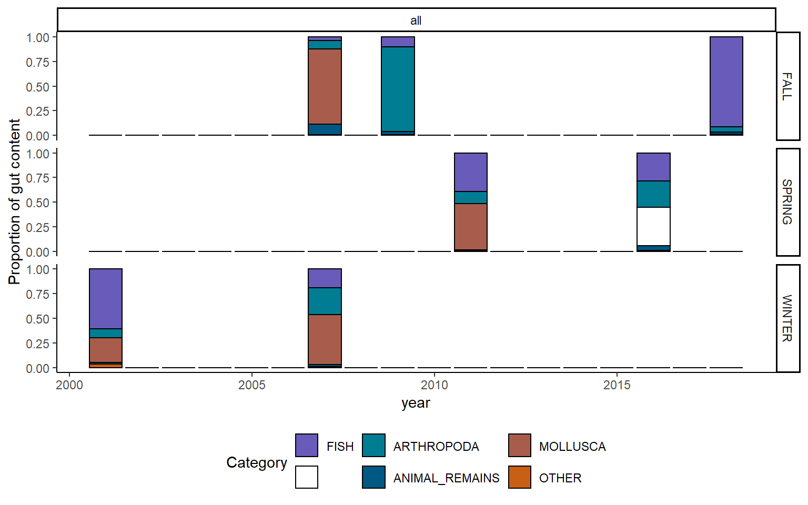

3.4 Diet
Diet data were compiled from existing data. For analysis, all geographic samples were grouped by season, year, and region, and only year-season-region combinations with more than 20 predators sampled were considered. Prey items that made up more than 5% of the predator’s diet in at least one year-season-region were identified to the broad category level; all other prey are grouped into the “other” category.
3.4.1 Figure

Figure 3.9: Offshore hake
3.4.2 Summary
| Prey category | Season | Region | Mean proportion +- SD (n years) | Range |
|---|---|---|---|---|
| SPRING | all | 0.389 +- NA () | 0.389 - 0.389 | |
| ANIMAL_REMAINS | FALL | all | 0.054 +- 0.046 () | 0.022 - 0.106 |
| ANIMAL_REMAINS | SPRING | all | 0.028 +- 0.025 () | 0.01 - 0.046 |
| ANIMAL_REMAINS | WINTER | all | 0.018 +- 0.006 () | 0.013 - 0.022 |
| ARTHROPODA | FALL | all | 0.333 +- 0.454 () | 0.054 - 0.857 |
| ARTHROPODA | SPRING | all | 0.197 +- 0.102 () | 0.125 - 0.269 |
| ARTHROPODA | WINTER | all | 0.182 +- 0.132 () | 0.088 - 0.275 |
| FISH | FALL | all | 0.35 +- 0.488 () | 0.036 - 0.912 |
| FISH | SPRING | all | 0.336 +- 0.075 () | 0.283 - 0.389 |
| FISH | WINTER | all | 0.398 +- 0.296 () | 0.188 - 0.607 |
| MOLLUSCA | FALL | all | 0.384 +- 0.539 () | 0.002 - 0.765 |
| MOLLUSCA | SPRING | all | 0.467 +- NA () | 0.467 - 0.467 |
| MOLLUSCA | WINTER | all | 0.381 +- 0.179 () | 0.254 - 0.507 |
| OTHER | FALL | all | 0.008 +- 0.002 () | 0.007 - 0.01 |
| OTHER | SPRING | all | 0.011 +- 0.003 () | 0.009 - 0.013 |
| OTHER | WINTER | all | 0.022 +- 0.021 () | 0.007 - 0.037 |
3.4.3 Data
(#fig:diet_data)Offshore hake